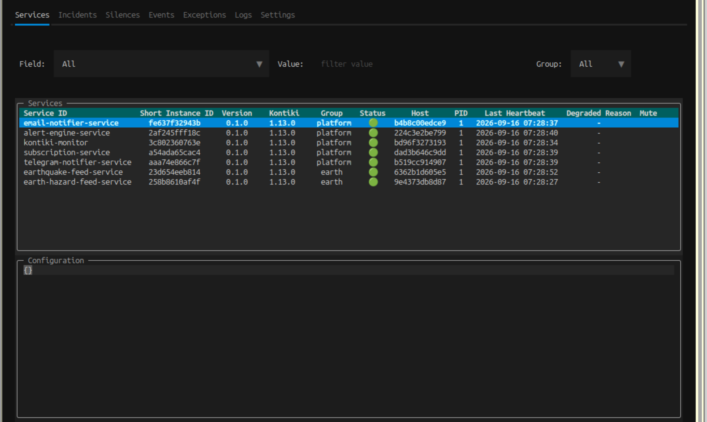
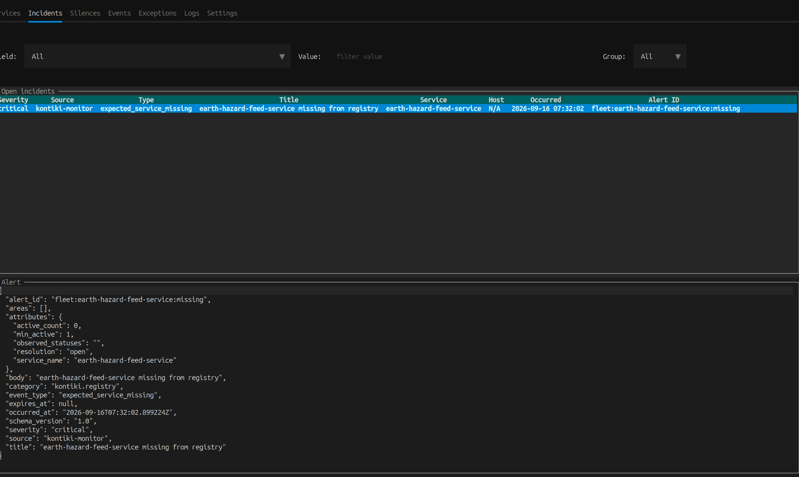
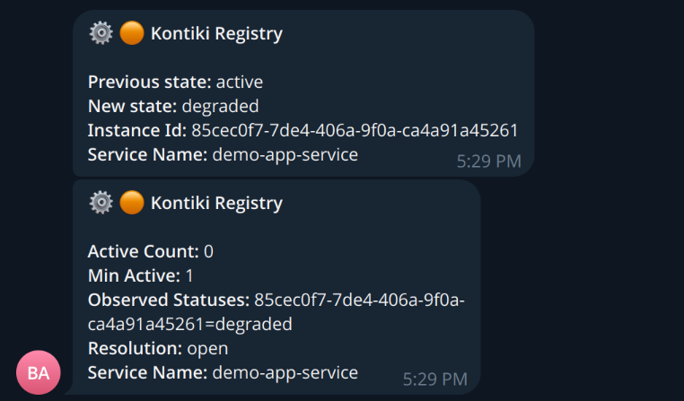

on_event
React when something happens on the bus.
Client
await messenger.publish("order.created", payload)Server
class OrderService:
@on_event("order.created")
async def on_order(self, payload):
...Kontiki is a compact open-source stack for Python services. Build every kind of service with Kontiki — from a complex domain service to a database backup job — and you get messaging, registry, logs, and alerts in one model, without a separate ops toolchain.
A Python framework on AMQP — you write entrypoints, Kontiki runs the bus.
React when something happens on the bus.
Client
await messenger.publish("order.created", payload)Server
class OrderService:
@on_event("order.created")
async def on_order(self, payload):
...Call another service like a local method.
Client
await StockProxy(messenger).get_stock(sku)Server
class StockService:
@rpc
async def get_stock(self, sku):
return self.delegate.stock_for(sku)Expose a simple HTTP API.
class HealthService:
@http("/health", "GET")
async def health(self, request):
return {"ok": True}Run a periodic task.
class PollService:
@task(interval=60)
async def poll(self):
...A Textual TUI over the registry and monitor — fleet, open alerts, silences, and logs from one SSH session.


A small ops suite for Kontiki platforms — complete enough to run, simple enough to own.

pip install kontiki kontiki-tui kontiki-monitor